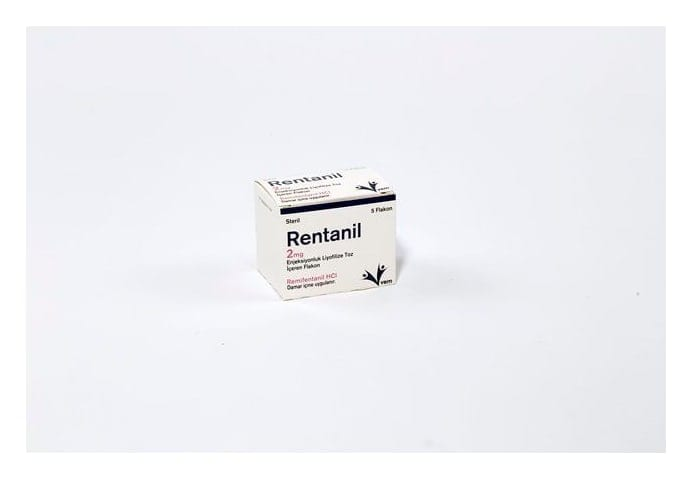

Rentanil 2 mg Enjeksiyonluk Liyofilize Toz İçeren FLAKON,5 Adet

Ne için kullanılır
KT · Bölüm 1RENTANİL, etkisi çok hızlı başlayıp çok kısa süren anestezik bir ilaçtır. RENTANİL, steril (içeriğinde herhangi bir yabancı madde olmayan), beyaz, hemen hemen beyaz liyofilize toz içeren, 5 ml kapasiteli flakonlar halindedir. RENTANİL aşağıdaki amaçlarla kullanılır: Ameliyat öncesinde ve sırasında uyku durumunu devam ettirmeniz ve ağrı hissetmemeniz için 18 yaş ve üzeri solunum cihazına bağlı olarak Yoğun Bakım Ünitesinde tedavi görürken uyku durumunu devam ettirmeniz ve ağrı hissetmemeniz için